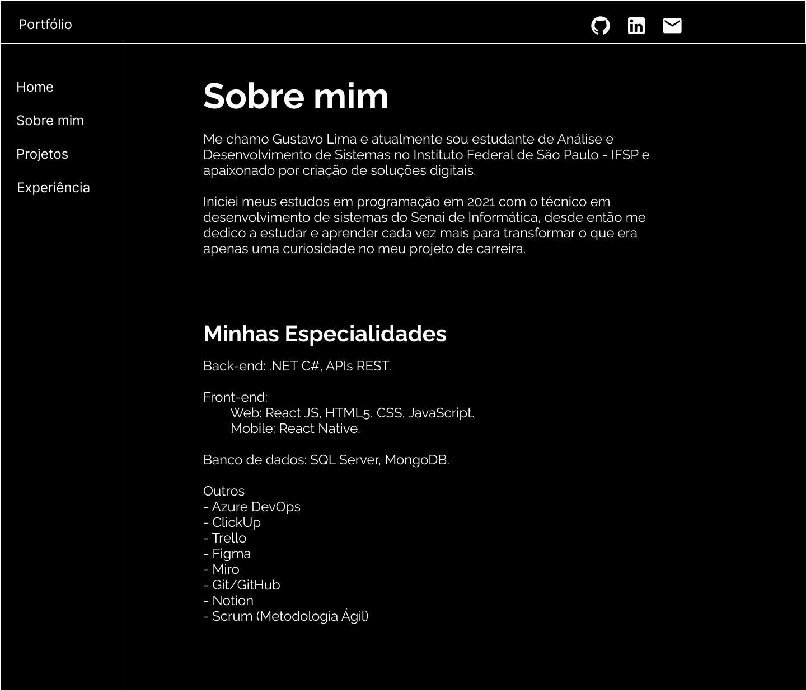
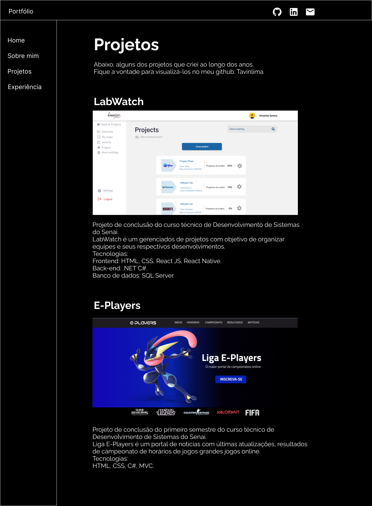
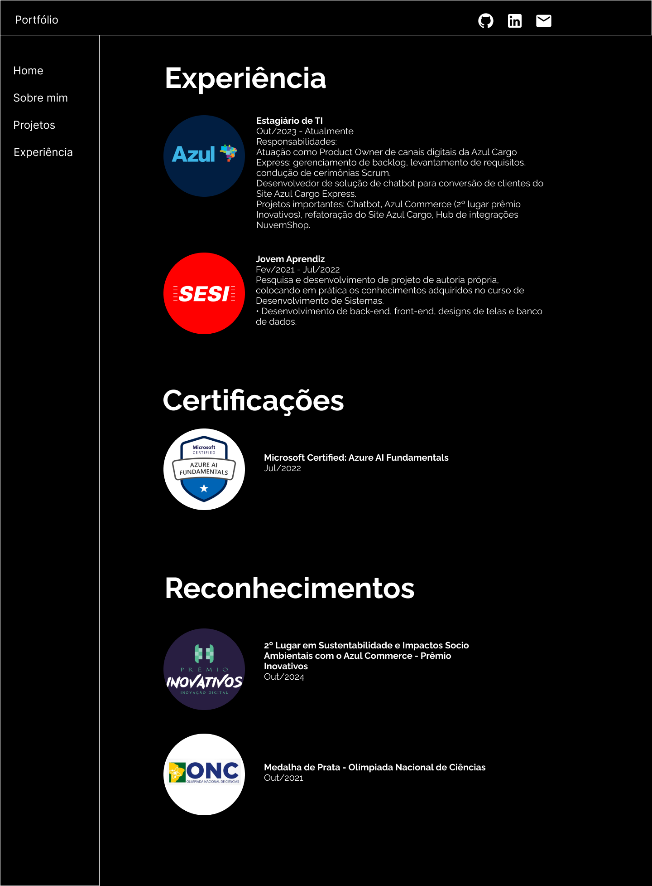

Protótipo de Alta Fidelidade do meu portfólio Web
Voltar para página inicial
Essa atividade consistiu na criação do protótipo de alta fidelidade do meu portfólio pessoal, a seguir as imagens das páginas criadas:
Página - Home
Página - Sobre mim

Página - Projetos

Página - Experiência
